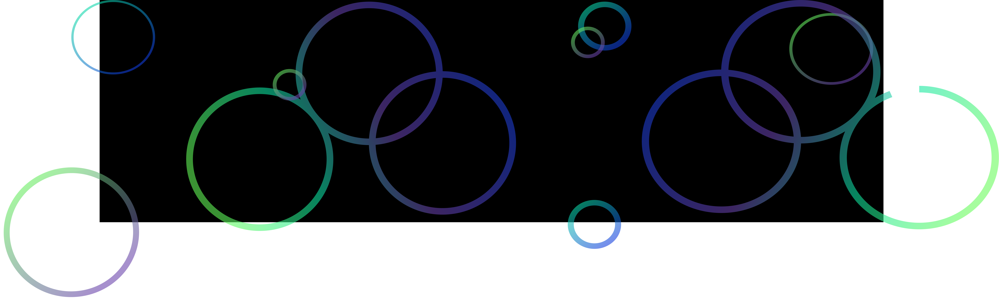

Hello... My name is Randal!
“I am a junior UX/UI designer based out of San Antonio, TX. As a graffiti and digital artist, I am always pushing the boundaries of my work. I use my artistic abilities, as well as quantitative and qualitative research methods, to solve user problems and inspire user centric designs.”
It uses utility classes for typography and spacing to space content out within the larger container.
Designs

Some quick example text to build on the card title and make up the bulk of the card's content.

Some quick example text to build on the card title and make up the bulk of the card's content.

Some quick example text to build on the card title and make up the bulk of the card's content.
